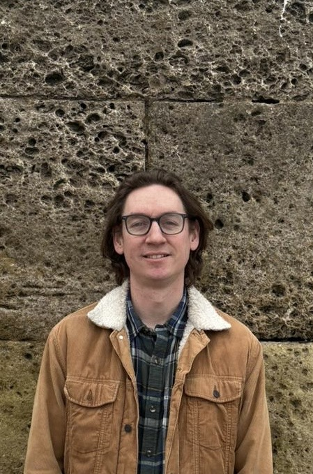

Furniture
From coffee tables and drinks cabinets to dining tables and larger statement pieces, each item is designed and made with care, with an emphasis on thoughtful details, good materials and lasting quality.
Bespoke furniture & cabinet making · Dorset
Handcrafted furniture and cabinetry, thoughtfully designed and made to sit naturally within the spaces they belong to. Based in Poole, Dorset, I create individual pieces for homes and interiors, from freestanding furniture to carefully integrated fitted cabinetry.
Explore selected work ↘
Thoughtful design, carefully chosen timber and considered craftsmanship come together to create pieces made for everyday life and built to be enjoyed for years to come.
What I do
Every project starts with a space, an idea or a particular need. Working together, we can develop a piece that feels right for you and the way you live.
From coffee tables and drinks cabinets to dining tables and larger statement pieces, each item is designed and made with care, with an emphasis on thoughtful details, good materials and lasting quality.
Built-in bookcases, cabinets and storage, designed to make the most of a space while sitting naturally within the character and proportions of the room.
Whether you have a finished set of drawings, an idea you’d like help developing, or a more unusual request, I can work with you to create something that suits your needs.
Considered, handmade pieces that celebrate the natural character of timber, from bowls and candle holders to lamps and other objects for the home. Made to be enjoyed for generations.
Selected work
A selection of work that reflects an appreciation for natural materials, simple forms and the details that make each piece individual.

A carefully made piece with considered proportions and details.

Small pieces that celebrate the grain, texture and character of wood.

About Ben
I’m Ben, a City & Guilds-qualified, classically trained cabinet maker based in Poole, Dorset.
After developing my skills working in other workshops, I started Ben Clarke Bespoke in 2023 to focus on making individual pieces tailored to the people and spaces they’re made for.
I have a particular appreciation for working with solid timber, allowing the natural character, grain and beauty of the material to shine through. I enjoy taking a piece from the early stages of an idea through to the finer details of making and finishing, creating work that is thoughtfully considered, carefully made and built to last.
I work throughout Dorset and the surrounding areas, with the flexibility to take on larger projects further afield.
The process
Each commission is different. Whether you know exactly what you’re looking for or are starting with a rough idea, the process is collaborative from the outset.
We discuss your idea, the space, how the piece will be used and what matters most to you.
We work through the design, materials, dimensions and practical details to arrive at a considered solution.
The piece is made with care, with attention given to the timber, construction and finishing.
Once complete, the piece is delivered, with installation arranged where required.

Get in touch
Whether you have a fully developed design or just the beginnings of an idea, I’d be happy to hear about it. If you’re considering a piece for your home, get in touch and we can talk through the possibilities.
Based in
Poole, Dorset
Working throughout Dorset and the surrounding areas,
with larger projects considered further afield.